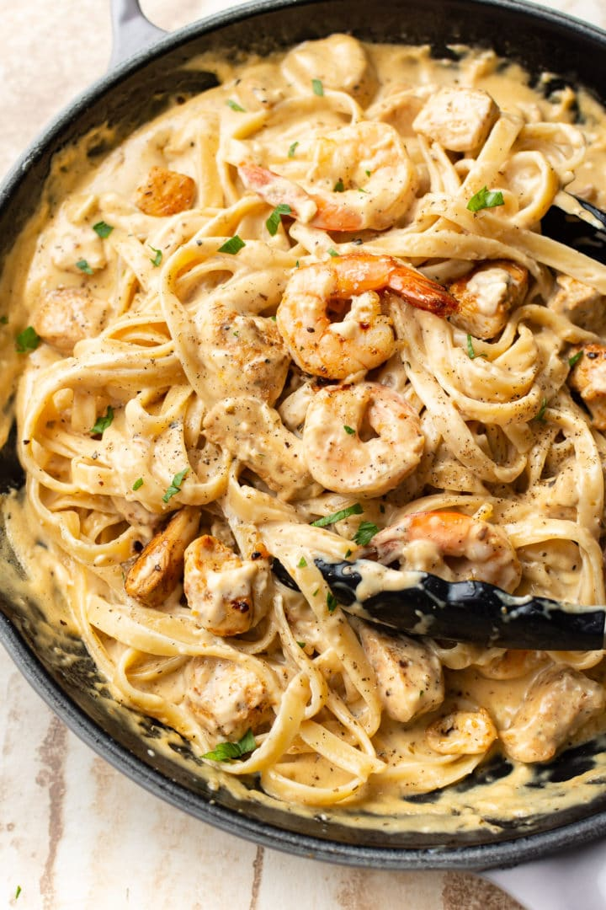

Cajun Alfredo

Description
Cajun Alfredo is a delicious fettuccine alfredo recipe with a bit of a kick.
Ingredients
Shrimp
- 1 ½ pounds uncooked medium shrimp, peeled and deveined
- 2 tablespoons salt-free Cajun seasoning
- ½ teaspoon salt
- ½ teaspoon freshly ground black pepper
- 2 tablespoons butter
Alfredo Sauce
- 2 tablespoons salted butter
- 1 tablespoon freshly minced garlic
- 1 (8 ounce) package cream cheese, cubed
- ½ teaspoon salt-free Cajun seasoning
- 2 cups 1% milk
- 2 cups freshly grated Parmesan cheese
- ½ (1 pound) package frozen fire-roasted pepper and onion blend
- ¼ teaspoon freshly ground black pepper
- 2 teaspoons chopped fresh parsley
Instructions
- Fill a large pot with lightly salted water and bring to a rolling boil. Cook fettuccine at a boil until tender yet firm to the bite, about 8 minutes.
- Meanwhile, season shrimp with Cajun seasoning, salt, and pepper.
- Melt butter in a large skillet over medium heat. Add shrimp and cook until pink and opaque, about 4 minutes. Transfer shrimp to a plate and set aside.
- Melt butter for Alfredo sauce in the same skillet. Cook garlic, stirring constantly, until fragrant, about 30 seconds. Add cream cheese cubes and Cajun seasoning. Whisk sauce to smooth out any large lumps. Slowly pour in milk, about 1/4 cup at a time, while continuing to whisk.
- Add Parmesan cheese, roasted pepper blend, and black pepper. Stir well to combine. Continue to cook and stir until sauce reaches desired thickness, 2 to 3 minutes. Remove from heat.
- Drain pasta and add to the skillet. Toss to coat evenly and top with shrimp. Serve garnished with parsley.